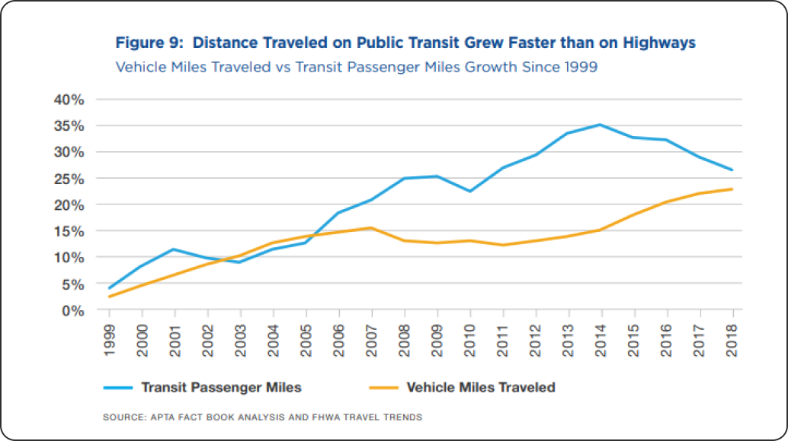

1
Incorporate carbon emission and cost calculations into a navigation app
This spring, I designed a green navigation app for the Go Carbon Neutral 2021 challenge, with my team placing 3rd among 20 finalists. Our app helps users make carbon neutral choices in their daily lives by providing carbon emissions data on their commutes, and suggesting alternate low-carbon emission routes. The app gamifies carbon neutral transit, rewarding users with points that can be exchanged for prizes. Through this challenge, I researched the impact of transportation on individuals carbon footprints, and designed a solution to help the Bay Area become carbon neutral by 2050.
Location: Berkeley, CA
Timeline: March-April 2021
Stakeholders: BART, local businesse, Berkeley residents
Team: Xiaoyu Hu, Sydney Wong
Role: UI/UX designer, researcher
Tools: Figma
According to the EPA, transportation contributes about 28% of all greenhouse gases emitted in the US in 2019. Moreover, private vehicles contribute half of the total transportation emitted gases, with each vehicle emitting 6-9 tons of CO2 a year.
Taking public transit, walking, biking, or more efficient car routes can significantly reduce transportation related emissions. However, public transit use has decreased dramatically from 50-94% in 2020 due to COVID-19, and has been losing ridership even earlier, decreasing by 11% from 2014-2018, according to studies from UCLA.
Our target user group is Berkeley residents. Private vehicle owners often need to travel far distances for work, or just enjoy the ease and comfort of driving themselves. They are unlikely to switch completely to public transit for long commutes when they already own a car. A solution for these users should create ways for them to drive more efficiently for long trips, or provide strong incentives to switch to walking, biking, or public transit for shorter trips.
Non-vehicle owners, such as students, are more likely to use public transit or walk, but also often use rideshare apps for convenience. If there is enough incentive, these users are more likely to choose public transit over expensive rideshare apps for both shorter and longer trips.
As environmental awareness grows and people become more open to reducing their carbon footprints, our goal was to create an app that equips the individual with carbon emissions information, and empower them to consistently make carbon neutral choices, starting in Berkeley, CA.
We began by conceptualizing
Incorporate carbon emission and cost calculations into a navigation app
Points and rewards system for choosing carbon neutral routes
Special events encourage community outings and promote public health
After submitting our proposal, we received feedback from a panel of judges and mentors, which we synthesized into a few main improvements which used to guide the final design and features of the app.
A major feedback we received from the judges was the fact that we did not quantify how much our app would be able to reduce carbon emissions. I found it very challenging to come up with exact numbers, as we had no idea how companies calculated their carbon footprints. We found relevent pieces of information, such as average carbon emissons per mile from driving, but weren’t sure how to put it all together.
Seeking guidance, I met with a mentor who had experience in the self-driving car industry. Our mentor suggested a formula to estimate the amount of carbon emissions reductions based on a certain usership of the app using Berkeley demographics, which we used to quantify the app’s effectiveness.
To increase accesibility for people of different abilities I included speech-to-text options, and chose large fonts with enough contrast. Additionally, we decided to focus on partnering with local businesses in order make the app free, and increase inclusivity for people of all socioeconomic backgrounds. In exchange for driving traffic towards local businessess, we would receive prizes that users can win in the app by redeeming points.
Though our initial design included some monthly social events, and prizes aimed to sustain user motivation, our mentors suggested that we also increase the social aspect of the app to further increase and sustain motivation. To this end, I added an activity feed and leaderboard so users could stay up-to-date, and foster friendly competition amongst each other. Inspired by social media apps, I also included an in-app chat function that friends could use to plan outings together.
A mentor, who is a regular biker, informed us on how bikers and walkers sometimes actually preferred scenic routes, since the quickest route is often by roads with cars flying by. In response to this I created a “quickest route” and “scenic route” options which encourages new bikers and walkers with less intimidating paths, and caters to existing bikers and walkers.
A mentor who lived outside of Berkeley pointed out that in other cities with less established public transit options, driving will be necessary at times. Taking this into account, we included low idling routes to reduce emissions for necessary car trips.
Incorporating the feedback into the app design, I created some final mockups to present to the judges. With an initial release phase in Berkeley, a 25% usership rate is projected to cause a 22% reduction in emissions from short trips using private vehicles.
Our app gamifies transit with levels, points, special events, and prizes, making choosing carbon neutral options rewarding and fun. The home screen interweaves the nagivation and social aspects of the app with a central map, and favorite locations section help users navigate on-the-go, while the social feed updates users on their friends recent carbon neutral choices to increase motivation. Monthly special events promote health overall with activities such as walking, and can be switched out each month to promote different local sponsers or goals.
Taking into account our inherent social nature, I added a social page to provide an additional incentive, other than prizes, to encourage sustained usership and increase carbon neutral chocies. I also added a profile page, so that users can check their stats, and track their progress over time.
The navigation page lists local sponsers with higher point values first, driving traffic towards them in exchange for prizes that we can provide for free to our users. Since we had many pieces of information such as carbon emissions, points, and transit options to present in addition to the usual navigation option I decided to present all the transport options with the information on a seperate screen to avoid information overload.
Going back to our mentors feedback, I included biking routes to better suit the bay area userbase. The addition of a scenic bike route aims to encourage beginners bikers who may not feel confidnet biking on roads yet, and provide experienced bikers with an alternate route. For unavoidable car trips, a lower carbon route is offered.

Route ends with a “Collect Points” button that mimics completion of a task in games, and gives users a sense of acheivement. The prize shop is filled with prizes such as athletic gear giftcards that enable users to continue making carbon neutral choices. Prizes such as grocery store discounts specialized for socioeconomically disadvantaged people aim to increase inclusivity.
Throughout this challenge, I focused on designing the app based on our research and feedback. My favorite part of this challenge was being able to talk to working professionals about our proposal and carbon neutrality. I found their input very valuable in designing the app and better understanding our user base.
Through this project, I practiced designing a functional app, and explaining my design choices to a panel of judges. It was challenging to process all the feedback to keep the app focused on helping users make carbon neutral choices. It was also difficult to gather data to create meaningful statistical analysis and projections. With more time, we would've liked to conduct more rigorous user research to produce substantial data analysis. I think the app could be improved by using a WCAG contrast checker, and including text-to-speech options, if it were to be coded.
Let's Connect!


©2021 created by Xiaoyu Hu